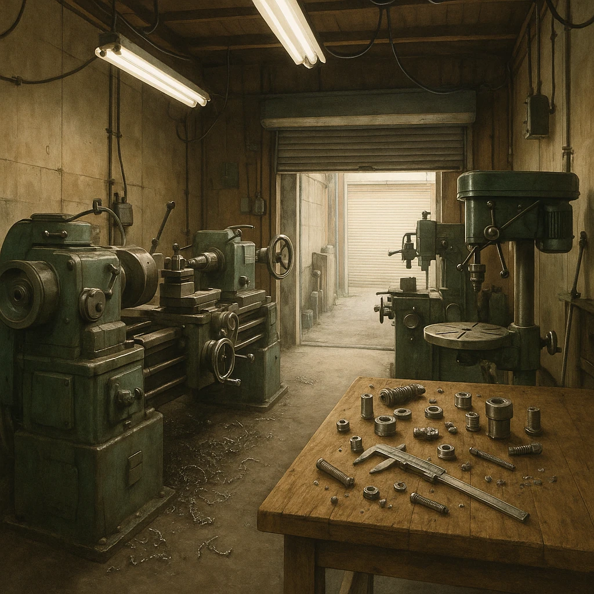

Ⅳ-7
阪神のもう一つの特徴
大企業を支える
町工場
の集まり
大企業の
⑭
下請け
を行っている
⑮
中小企業
の数が多いことも特徴である。（
東大阪市
＝小さな工場の密集地）
大企業
完成品を組み立てて売る
注文（＝⑭）
部品をつくって納める
ねじ工場
金型工場
めっき工場
歯車工場
ばね工場
板金工場
⑮
（東大阪市）

問われ方
「
小さな工場が多く集まる都市
は？」→
東大阪市
。人工衛星の部品までつくる技術力で知られる。
第15章 近畿地方
SEED EDUCATION